**Cette vidéo de la chaîne Labo Des Réseaux explore en profondeur la création de bout en bout d'un influenceur virtuel grâce au modèle vidéo de pointe Seedance 2.5, accessible à moindre coût via la plateforme officielle Lumina.** Le créateur démontre comment concevoir des personnages cohérents, rédiger des prompts structurés au format JSON avec l'aide de l'assistant Claude, et dépasser le simple stade de la copie de tendances en proposant du contenu original et narratif.
**Le tutoriel détaille méthodiquement l'utilisation des différentes fonctionnalités de Seedance 2.5 : la création freestyle à partir d'images de référence, l'édition de vidéos existantes (mèmes, films) pour y insérer ses avatars, l'extension vidéo pour dynamiser un contenu viral, ainsi que la gestion des placements produits.** Un accent particulier est mis sur la synchronisation vocale et le contournement des barrières linguistiques du français en couplant Seedance à des voix de référence conçues sur ElevenLabs ou en exploitant des alternatives comme Wan 3.0.
**En conclusion, l'analyste rappelle que si la technique permet aujourd'hui une liberté créative totale (publicités, UGC, scénarisation complexe), le véritable défi réside dans l'acquisition de l'audience.** Pour y parvenir, il préconise des stratégies de cross-polloration de lore en faisant interagir ses personnages avec des influenceurs IA déjà établis, tout en soulignant le potentiel économique massif de ces outils pour la communication des marques et la création d'avatars personnalisés.
Avoir une tête bizarre et un look décalé, ça ne suffit pas pour faire de toi un top influenceur IA. Pour percer et durer dans le temps, il faut aussi savoir proposer autre chose.
Interface & Outils : Vidéo verticale de type Reels / TikTok illustrant des avatars ou personnages générés par IA.
Contenu textuel & Code : Personnages aux looks décalés et excentriques (costumes d'époque, perruques, monocle).
Action / Démonstration : Présentation visuelle d'exemples de personnages décalés pour illustrer le sujet des influenceurs IA.
Et sortir un peu du cadre. Oublie les modèles IA qui ne permettent que de copier des trends. Le meilleur modèle pour faire de ton influenceur IA une star, c'est Seedance 2.5. Justement, Seedance 2.5 est accessible à moindre coût via la plateforme officielle de ByteDance.
Interface & Outils : AUCUNE
Contenu textuel & Code : Aucun texte ou interface technique visible, seulement une génération vidéo de personnage virtuel. [DESC_IMAGE_1] Démonstration visuelle d'une vidéo générée par intelligence artificielle illustrant un influenceur virtuel.
Action / Démonstration : Démonstration et mise en contexte pratique.
Lumina, partenaire de cette vidéo. Et dans cette vidéo, je vais te montrer comment créer un influenceur IA qui aura le potentiel pour devenir une star des réseaux. Notre ami Gontran de Misanthrope a raison. Pour tes influenceurs IA et ton contenu IA en général, Seedance 2.5 est aujourd'hui le meilleur modèle vidéo que j'ai testé. Et l'idéal, c'est de l'utiliser via Lumina, le partenaire de cette vidéo.
Interface & Outils : AUCUNE
Contenu textuel & Code : Logo Lumina et texte "Et l'idéal, c'est de l'utiliser via"
Action / Démonstration : Présentation du partenaire Lumina et de l'influenceur IA.
Alors pourquoi Lumina ? D'abord parce que j'y retrouve toutes les fonctionnalités du modèle, y compris l'édition vidéo et l'extension vidéo. C'est d'ailleurs cette dernière fonctionnalité que j'ai utilisée pour faire entrer Gontran dans des vidéos existantes, comme tu l'as vu en intro. Ensuite, pour le prix. Lumina fait partie des plateformes les moins chères que j'ai trouvées pour utiliser SeedDance et SeedDream.
Interface & Outils : Interface vidéo Lumina et présentation YouTube.
Contenu textuel & Code : Texte « L'une des plateformes les moins chères que j'ai trouvées » avec mention Seedance.
Action / Démonstration : Le créateur illustre l'intégration de Gontran dans des vidéos et présente les arguments tarifaires de l'outil.
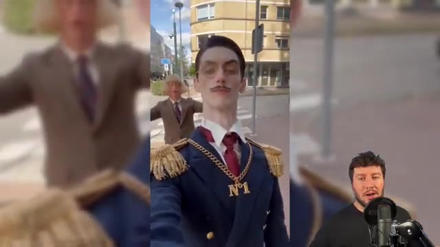
🔍 Agrandir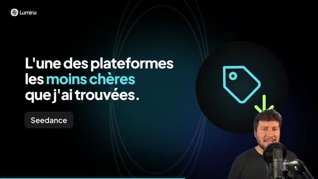
🔍 AgrandirLogique, car c'est une plateforme officielle de ByDance. Ils peuvent donc proposer des tarifs très compétitifs sur leur propre modèle. Je te laisse aller voir la page des tarifs pour les comparer par toi-même. Le lien est en description et en commentaire épinglé. Et dans cette vidéo, on va faire le tour de la plateforme avec un cas concret. On va prendre notre influenceur IA et je vais te montrer tout ce qu'on peut faire avec les modèles de Seedense 2.5.
Interface & Outils : Site web de la plateforme Lumina et interface vidéo de présentation avec incrustation du présentateur.
Contenu textuel & Code : Tableaux des prix ($0.99, $9, $29, $49) avec détails des crédits, et texte "Le tour de la plateforme : Un cas concret - Notre influenceur IA, mis en scène de A à Z avec Seedance 2.5 sur Lumina".
Action / Démonstration : Le créateur montre la grille tarifaire pour illustrer les prix compétitifs, puis introduit la démonstration d'un cas concret sur la plateforme.
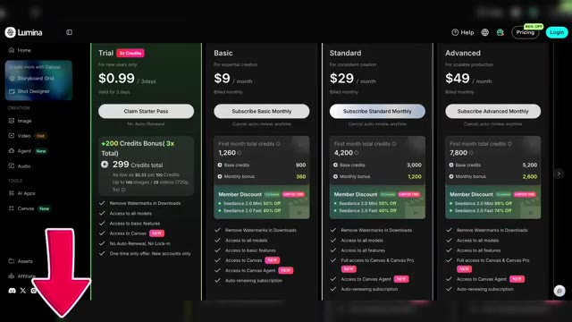
🔍 Agrandir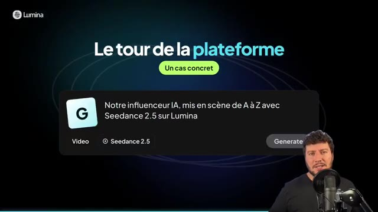
🔍 AgrandirJe suis donc sur mon compte Lumina et je vais me rendre d'abord dans l'onglet images. C'est là où je vais pouvoir générer mes influenceurs IA. Alors comme tu le vois, j'en ai déjà généré un, c'est Gontran et je l'ai fait avec Seedream. Pour la rédaction de mes promptes, je me suis aidé de Claude. En référence image, j'utilise la tête d'un des influenceurs IA les plus connus du moment.
Interface & Outils : Lumina (plateforme web d'intelligence artificielle)
Contenu textuel & Code : Modèle Seedream 5.0 Lite, prompt détaillé en anglais décrivant Gontran, zone de saisie de prompt avec modèle GPT Image 2.5 Sunburst, et image de référence. [DESC_IMAGE_3] Navigation sur la plateforme, présentation d'un influenceur virtuel existant et démonstration de la génération basée sur une référence visuelle.
Action / Démonstration : Démonstration et mise en contexte pratique.
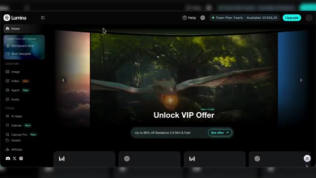
🔍 Agrandir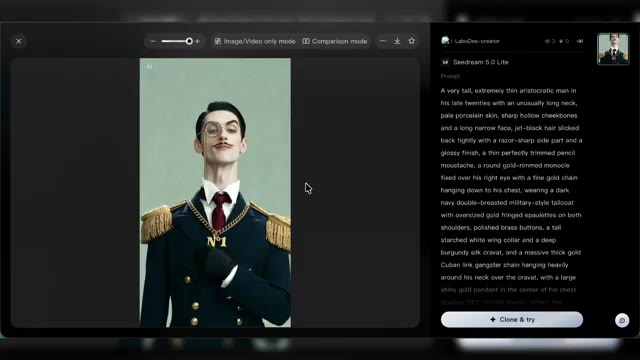
🔍 Agrandir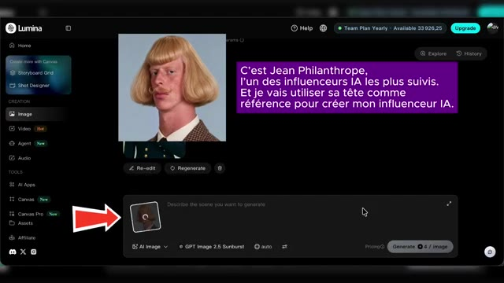
🔍 AgrandirPour le modèle, ici je vais utiliser Seedream encore une fois. Et je vais choisir le ratio de sortie, 9,16 et c'est parti. Ok, j'ai mon résultat avec donc ce nouvel influenceur qui va incarner la copine de Jean Philanthrope. Et pour compléter, j'ai créé un troisième prompt.
Interface & Outils : Application web Lumina, outil de génération d'images par IA.
Contenu textuel & Code : Interface utilisateur sombre avec des menus de création (Image, Video, Agent, Canvas), un champ de prompt textuel, et un bouton "Generate".
Action / Démonstration : Le créateur sélectionne les modèles et les prompts pour générer le portrait d'un nouvel influenceur virtuel.
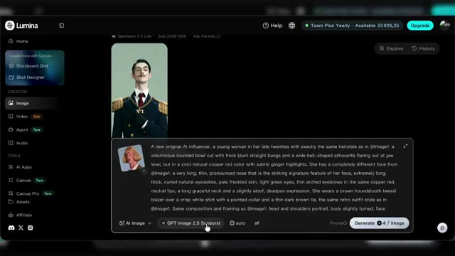
🔍 Agrandir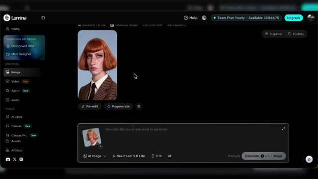
🔍 AgrandirC'est pour recréer l'influenceur Jean Philanthrope, mais cette fois-ci de plein pied. Et pour ça, je vais utiliser un autre modèle. Donc tu vois, il y a aussi les modèles Nano Banana et les modèles GPT Image. Et moi, je vais utiliser GPT Image 2.5. C'est parti. Ok, j'ai donc bien mes trois influenceurs que je vais pouvoir utiliser en référence dans mes vidéos.
Interface & Outils : Interface web de génération d'images (style générateur IA avec panneau de prompt latéral).
Contenu textuel & Code : Modèle utilisé : "GPT Image 2.5 Sunburst". Prompt détaillé décrivant l'homme en pied avec costume en tweed marron, coupe au bol blonde et chaussures en cuir. Panneau latéral affichant les trois influenceurs de référence.
Action / Démonstration : Le créateur présente l'image générée en pied d'un influenceur virtuel en utilisant GPT Image 2.5.
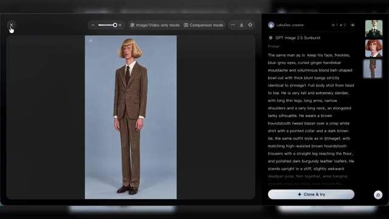
🔍 AgrandirEt j'ai aussi une bouteille de parfum, on va l'utiliser plus tard pour un exemple de placement produit avec un de nos influenceurs. On passe dans la partie vidéo, tu vois ici la liste des modèles. Quand je déplace le curseur sur Seed Dance 2.5, j'ai les différentes sous-catégories. Pour l'instant, nous on va rester en Freestyle Creation. Et à noter, on a aussi accès à WAN 3.0 et à Minimax H3, toutes les anciennes versions de Seed Dance.
Interface & Outils : Lumina (plateforme de création vidéo et d'images par IA)
Contenu textuel & Code : Liste des modèles vidéo (Seedance 2.5, Wan 3.0, MiniMax H3, Seedance 2.0, etc.), sous-catégories (Freestyle Creation, Multi-frame Editing, Video Editing, Extend Video), et un prompt pour une bouteille de parfum de luxe.
Action / Démonstration : Le créateur navigue dans les menus de sélection de modèles vidéo et présente un exemple de visuel généré pour un placement produit.
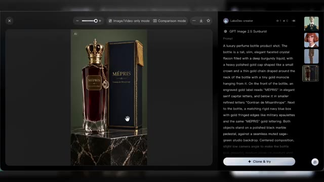
🔍 Agrandir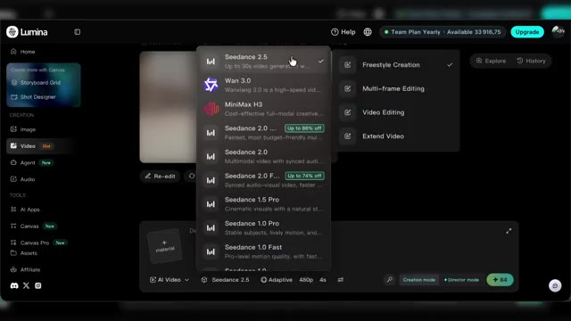
🔍 Agrandir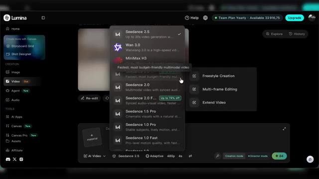
🔍 AgrandirOn va rester sur la version 2.5 en Freestyle. Ici je peux lui donner mes références Donc je vais lui donner mes influenceurs Du coup Gontran, Jean-Phi et L on va l'appeler Philippine J'ai mes trois références Mon prompt encore une fois je me suis aidé de Claude pour le rédiger A noter je lui ai demandé de me faire ça en JSON Je le copie-colle Et par contre ici je fais bien attention de changer Parce que pour les références il m'a mis par défaut Arrobas image 1 Mais je vais devoir le changer manuellement et reselectionner arrobas et choisir la bonne référence parmi celles que j'ai données à SeedDance 2.5.
Interface & Outils : Interface web de Claude (Anthropic).
Contenu textuel & Code : Code JSON contenant un bloc de configuration pour la génération vidéo : mode "reference_to_video", références @Image1, @Image2, @Image3, durée (15s), format (9:16), setting (salon parisien), et séquences de plans (shot_1, shot_2).
Action / Démonstration : Le créateur montre le prompt rédigé en JSON à l'aide de l'outil Claude avant de le copier.
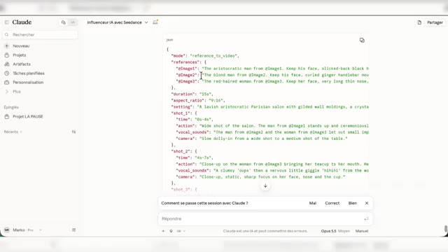
🔍 AgrandirOk, une fois que c'est fait, je choisis le ratio et la résolution et on va rester sur un format 9-16ème pour les réseaux sociaux et on va aller jusqu'à 15 secondes. L'avantage sur SeedDance 2.5, comme tu le sais, c'est un modèle qui offre jusqu'à 30 secondes max de vidéos. Donc l'idée, là on est dans une création purement originale avec nos 3 IA influenceurs.
Interface & Outils : Interface web de Lumina (outil de génération vidéo par IA)
Contenu textuel & Code : Menus de configuration vidéo, sélection du modèle Seeddance 2.5, formats d'image (9:16, 1:1, etc.), résolutions (480p, 720p, 1080p), curseur de durée réglé sur 15 secondes, et prompts textuels détaillés.
Action / Démonstration : Le créateur ouvre les paramètres vidéo, sélectionne le format 9:16 et règle la durée à 15 secondes avant de lancer la génération.
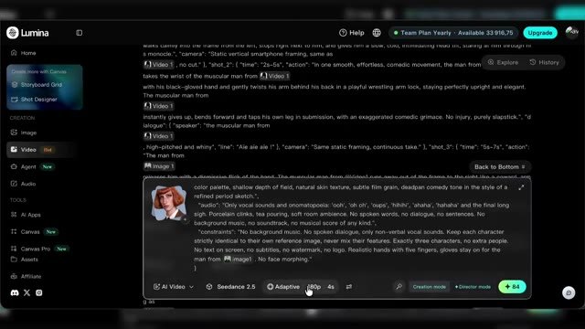
🔍 Agrandir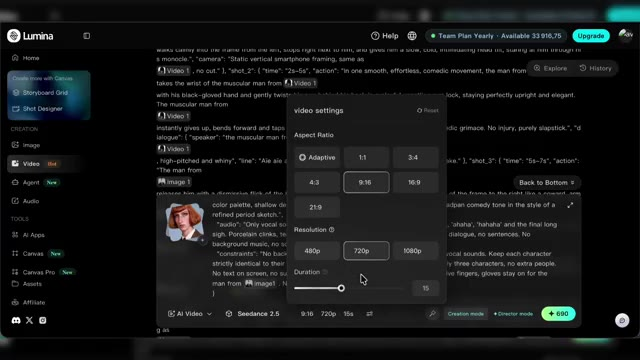
🔍 Agrandir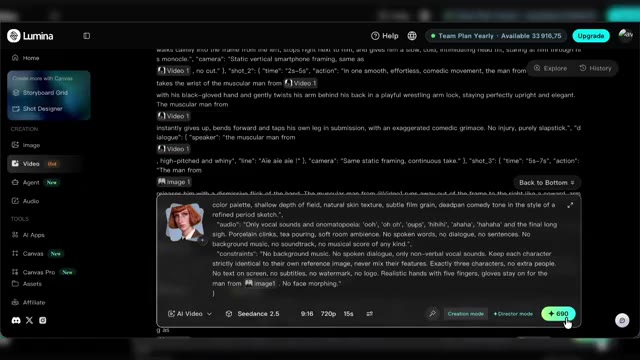
🔍 AgrandirOn va lancer la génération et voir ce que ça donne. Nouvel exemple, toujours avec Seed Dance 2.5 et en mode création.
Interface & Outils : Interface de lecteur vidéo ou simple affichage visuel sans élément technique d'outil.
Contenu textuel & Code : Visuel généré par IA (Seed Dance 2.5) représentant un personnage au style baroque.
Action / Démonstration : Visualisation du résultat de la génération vidéo en cours.
Dans le cas où tu veux mettre en scène ton influenceur avec un produit, tout simplement tu utilises en référence ton influenceur et le produit que tu souhaites qu'il mette en avant. Donc c'est pour ça qu'on avait créé ce parfum pour cet exemple. Et pareil, je me suis aidé de Claude pour réaliser mon spot de 10 secondes.
Interface & Outils : Interface web de sélection d'images et interface de l'assistant IA Claude.
Contenu textuel & Code : Galerie d'images d'avatairs et de produits publicitaires ; code JSON de configuration de plan vidéo (« mode: reference_to_video », « duration: 10s », plans de caméra).
Action / Démonstration : Le créateur montre la sélection des images de référence (influenceur et parfum) puis présente le code de génération de la vidéo publicitaire avec Claude.
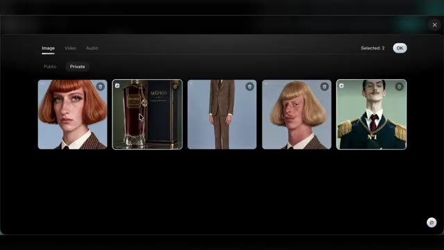
🔍 Agrandir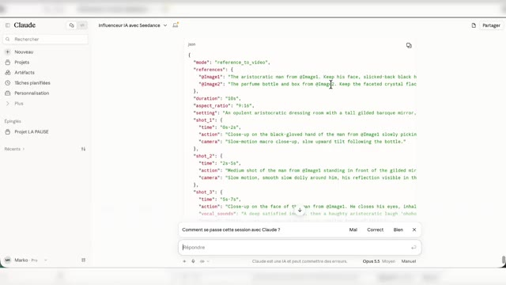
🔍 AgrandirEncore une fois, c'est en JSON. Je copie-colle et je vais changer mes références pour qu'elles correspondent. On va rester en 9-16ème et par contre, on va réduire à 10 secondes. C'est parti pour la génération. Donc ça, c'était pour de la création pure.
Interface & Outils : Lumina (générateur vidéo par IA)
Contenu textuel & Code : Prompt textuel détaillé, indicateur de chargement « Generating 1% », options de format et de durée.
Action / Démonstration : Le créateur lance la génération d'une vidéo après avoir configuré les paramètres et collé le prompt textuel.
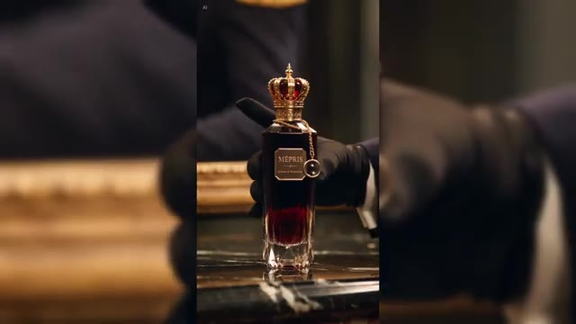
🔍 Agrandir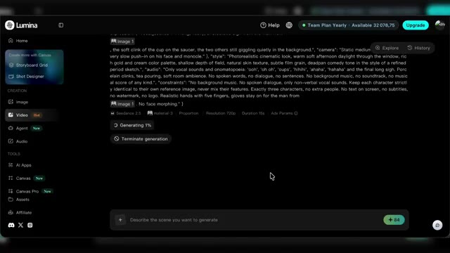
🔍 AgrandirMaintenant, pour de l'édition et notamment si tu veux reprendre des trends, des mèmes, des passages de films en y incluant tes influenceurs. Là aussi, tu vas pouvoir le faire très simplement avec Seed Dance 2.5. Mais cette fois-ci, on va sélectionner la fonctionnalité vidéo editing. Tu auras donc besoin de ta vidéo de référence.
Interface & Outils : Seed Dance 2.5
Contenu textuel & Code : Lecteur vidéo intégré avec barre de contrôle, zone de texte pour le prompt, sélecteurs de modèle (Seedance 2.5), résolution (480p), proportion et bouton de génération.
Action / Démonstration : Le créateur montre l'utilisation de l'outil pour importer et configurer une vidéo de référence en vue de son édition.
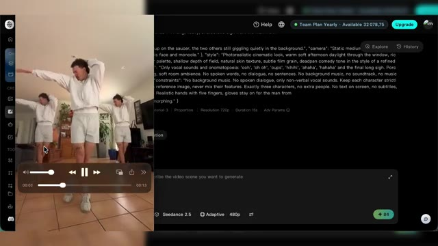
🔍 AgrandirNous, on va partir sur celle-là. Et par contre, pour éviter de déclencher un filtre copyright sur SiteDance, je te conseille d'uploader ta vidéo de référence sans l'audio, notamment s'il y a une musique sur la vidéo en question. Et là aussi, je me suis aidé de Claude pour la rédaction du prompt. Et tout simplement, je lui ai donné une capture de la vidéo et je lui ai demandé de m'écrire le prompt pour qu'il remplace chaque personnage par un de mes influenceurs.
Interface & Outils : Interface web de Claude (Anthropic)
Contenu textuel & Code : Fenêtre de discussion affichant une image intégrée d'un homme dansant, avec du texte de prompt textuel associé sur le côté.
Action / Démonstration : Le créateur montre comment il a utilisé une capture d'écran de référence dans Claude pour rédiger son prompt.
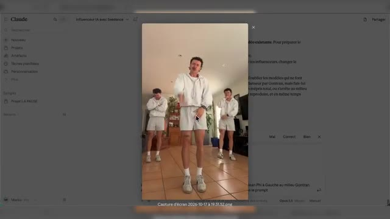
🔍 AgrandirBon là, une seule capture a suffi, mais pour des vidéos plus complexes, n'hésite pas à lui donner plusieurs captures de la vidéo en question pour qu'il t'aide à rédiger le bon prompt. J'oublie pas en plus de ma vidéo de référence, de mettre en référence mes influenceurs. Donc dans l'ordre de mon prompt, en image 1, Jean-Pierre, en image 2, Gontran, en image 3, Philippine.
Interface & Outils : Interface web de l'application Lumina (générateur de vidéo IA).
Contenu textuel & Code : Menus de téléchargement, timeline avec vignettes de personnages, options de modèle (Seedance 2.5, Adaptive, 720p).
Action / Démonstration : Le créateur montre l'ajout progressif d'images de référence (influenceurs) dans l'interface de l'outil.
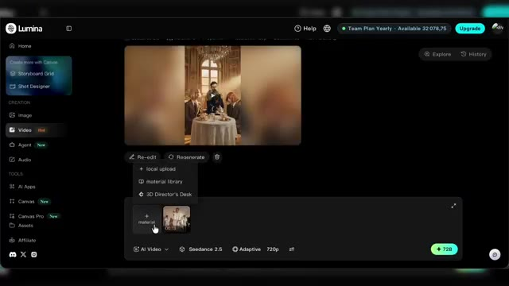
🔍 Agrandir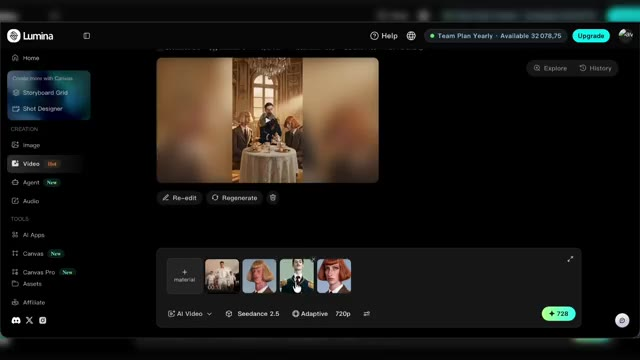
🔍 AgrandirEt ensuite, je n'ai plus qu'à bien modifier les références et ne pas oublier non plus d'indiquer la référence vidéo. Et donc vu qu'on est dans l'édition, on pourra pas choisir le ratio ni la longueur de la vidéo. Par contre, on peut choisir la résolution. Nous, on va rester sur du 720. Le résultat est assez bluffant.
Interface & Outils : Lecteur vidéo ou aperçu de génération.
Contenu textuel & Code : Vidéo verticale montrant un homme habillé en officier ou barman avec une chaîne en or "N°1", souriant dans un décor de bar.
Action / Démonstration : Le créateur montre le résultat vidéo finalisé obtenu après application des réglages de génération.
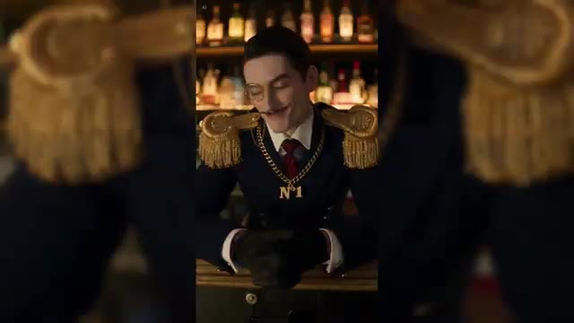
🔍 AgrandirT'as dû voir plein de vidéos comme ça sur les réseaux circuler ces derniers temps. Je te mets quelques autres exemples à l'écran. Et c'est vrai que pour la viralité de ton influenceria, c'est sûrement le type de vidéo qui va le mieux marcher au départ. Et si tu veux faire preuve d'un peu plus d'originalité, Il y a une fonctionnalité sympa à utiliser avec Seed Dance 2.5 comme on l'a fait avec les vidéos de notre introduction.
Interface & Outils : Vidéos issues de réseaux sociaux, sans interface logicielle visible.
Contenu textuel & Code : Exemples de vidéos courtes générées par intelligence artificielle présentées pour illustrer la viralité. [DESC_ACTION] Le créateur illustre son propos en montrant à l'écran des exemples de vidéos virales du même type.
Action / Démonstration : Démonstration et mise en contexte pratique.
Donc je suis toujours dans mon onglet vidéo et cette fois-ci je vais sélectionner Seed Dance 2.5 en mode extension. J'ai donc repris la vidéo la plus connue de Jean-Phi, une vidéo qui a fait plusieurs millions de vues. Alors je n'ai pas pris toute la vidéo, j'ai juste pris 10 secondes de celle-ci jusqu'à la fin et je l'ai mis en référence sur mon modèle Seed Dance 2.5.
Interface & Outils : Lumina (générateur vidéo IA)
Contenu textuel & Code : Menus de création vidéo, sélection du modèle Seed Dance 2.5, zone de prompt textuel et intégration de la vidéo de référence de Jean-Phi.
Action / Démonstration : Importation d'un extrait de 10 secondes de la vidéo de Jean-Phi comme référence et configuration de la génération avec Seed Dance 2.5.
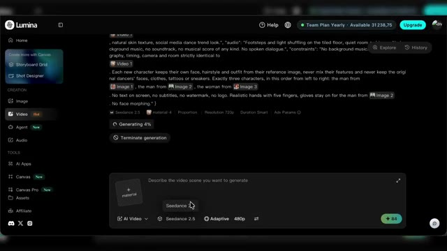
🔍 Agrandir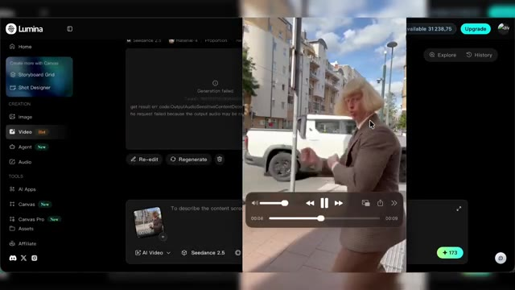
🔍 Agrandir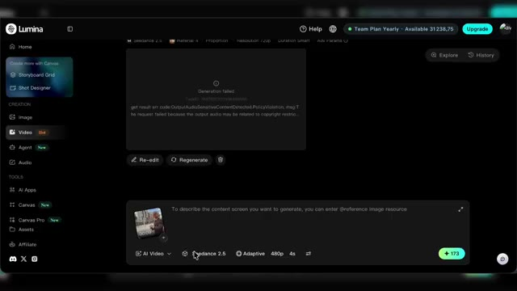
🔍 AgrandirEn plus, en référence, j'ai également donné Gontran qui intervient donc dans la vidéo pour prendre le portable de Jean-Phi. Et pour plus de personnalité, j'ai également donné un audio de référence pour que Seed Dance 2.5 utilise la même voix dans toutes les vidéos. Et là en l'occurrence, j'ai designé une voix sur Eleven Labs.
Interface & Outils : ElevenLabs (plateforme de synthèse vocale par IA)
Contenu textuel & Code : Text to Speech, champ de texte avec la voix 'Gontran' et le dialogue 'Bonjour, je suis Gontran, qu'est ce que vous regardez ?', modèle Eleven v4, paramètres de voix et de stabilité
Action / Démonstration : Le créateur montre la création et la configuration de la voix du personnage 'Gontran' sur ElevenLabs pour l'utiliser ensuite dans la vidéo
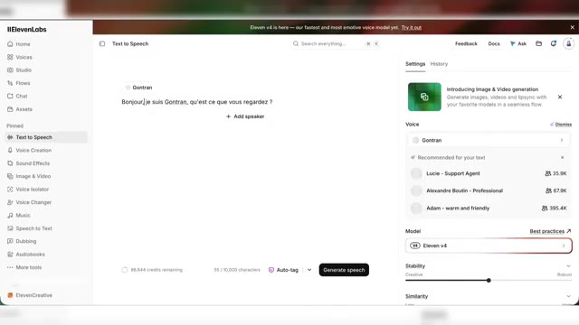
🔍 Agrandir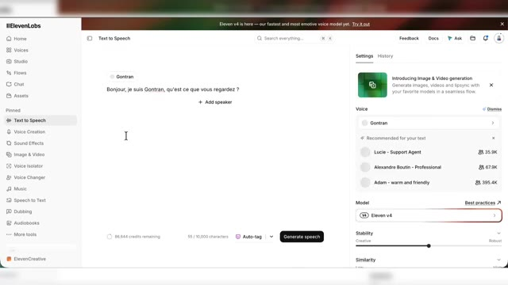
🔍 AgrandirJ'ai ensuite créé une référence courte, simple, et je l'ai transmise à Seed Dance 2.5. Et cette référence audio, je l'utiliserai à chaque fois que je voudrais faire parler Gontran dans une de mes vidéos pour qu'il garde donc la même voix. Alors comme d'hab, j'ai expliqué ce que je voulais niveau référence et j'ai également donné des petites captures à Claude pour qu'il m'aide à écrire mon prompt.
Interface & Outils : Lumina (générateur vidéo IA) et Claude (assistant conversationnel IA)
Contenu textuel & Code : Interface de Lumina avec aperçu vidéo, modèle Seedance 2.5 et options de format ; interface de Claude montrant un prompt JSON avec des références @Video1, @Image1 et @Audio1.
Action / Démonstration : Le créateur montre la configuration des références multimédias (image, audio et vidéo) dans l'interface de Lumina et la génération du prompt structuré via l'assistant Claude.
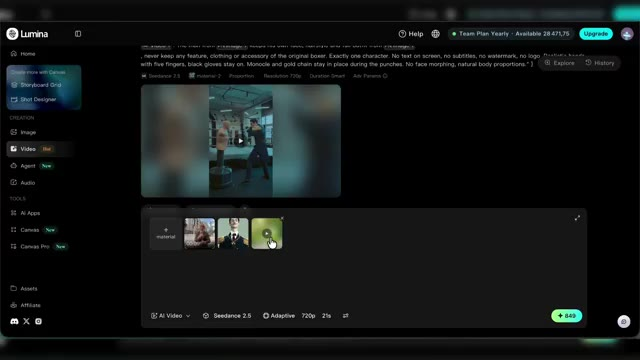
🔍 Agrandir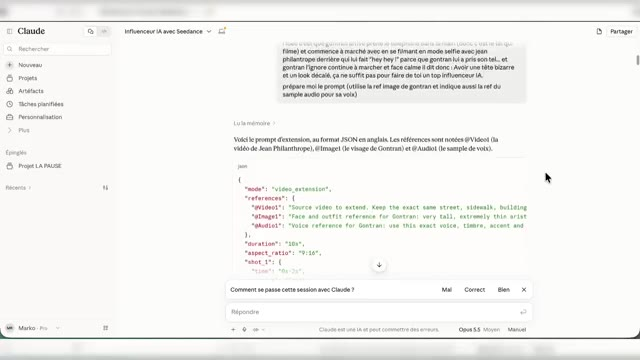
🔍 AgrandirEt ensuite j'ai simplement copié-collé et changé les références et le résultat tu l'as eu en intro de la vidéo. Avoir une tête bizarre et un look décalé, ça ne suffit pas pour faire de toi un top influenceur IA.
Interface & Outils : Lumina (générateur vidéo IA)
Contenu textuel & Code : Code JSON / prompt détaillé avec des références (mode: video_extension, references, Video1, Image1, Audio1, Seedance 2.5)
Action / Démonstration : Le créateur montre l'interface de l'outil IA où il a modifié les références textuelles pour générer la vidéo finale.
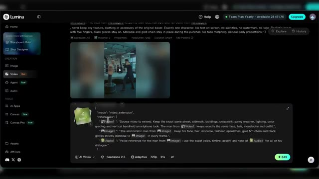
🔍 AgrandirAlors ce qui est intéressant avec ma technique d'utiliser cet audio de référence Eleven Labs, c'est que parfois avec le français, Cidense 2.5 a des légers soucis. Donc même si tu mets bien ton dialogue dans ton prompt, il va pouvoir avoir des problèmes de prononciation. Et du coup le fait d'utiliser en référence une voix Eleven Labs, ça veut dire aussi que je peux générer cette voix si j'en ai besoin sur Eleven Labs et ensuite l'ajouter à mon montage pour masquer les défauts occasionnels que je pourrais avoir lors de mes générations Seed Dance 2.5.
Interface & Outils : Graphismes animés et interfaces simulées de présentation vidéo (Lumina, Seedance 2.5, Timeline de montage).
Contenu textuel & Code : Textes explicatifs, blocs de prompts, avertissements et représentation graphique d'une timeline audio/vidéo.
Action / Démonstration : Explication de la technique d'utilisation conjointe de Seedance 2.5 et d'un audio Eleven Labs pour contourner les problèmes de prononciation en français.
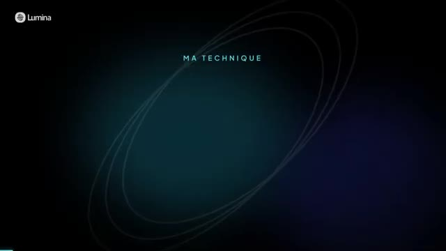
🔍 Agrandir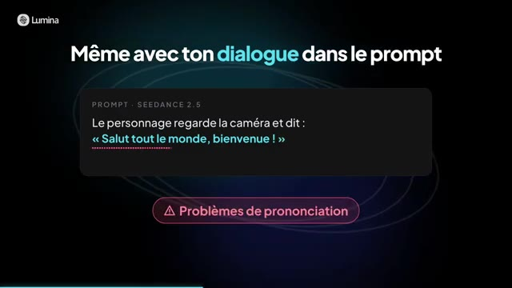
🔍 Agrandir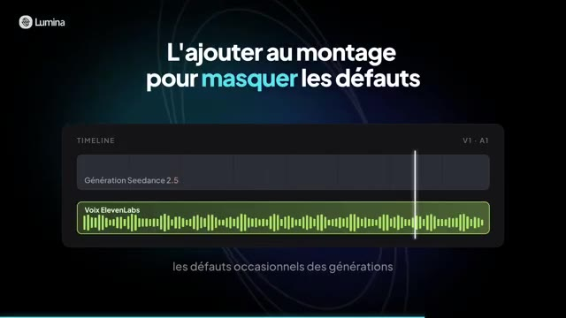
🔍 AgrandirEt d'ailleurs je l'ai fait sur deux de mes vidéos en introduction et ça camoufle sans soucis et les paroles prononcées par mon influenceur IA restent cohérentes. Et d'ailleurs quand t'as besoin de faire parler de ton personnage, il y a un autre modèle qui s'en sort bien, c'est One 3.0. Donc là par exemple je vais l'utiliser en freestyle. Je lui ai donné en ref, Gontran, le parfum et la voix de Gontran.
Interface & Outils : Lumina (générateur vidéo IA)
Contenu textuel & Code : Prompts textuels pour publicité de parfum, menus de création, paramètres de génération (Seedance 2.5, Wan 3.0, Adaptive, 480p, 4s), et barre de progression (générant à 11% puis 13%).
Action / Démonstration : Le créateur présente l'utilisation du modèle Wan 3.0 sur la plateforme Lumina pour générer du contenu vidéo à partir de prompts et de visuels de référence.
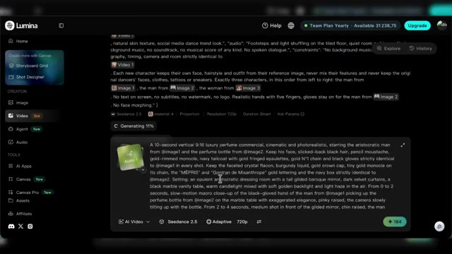
🔍 Agrandir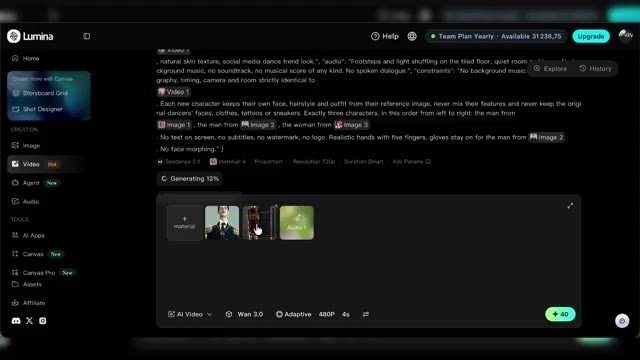
🔍 AgrandirLà encore, je me suis aidé de Claude pour la rédaction du prompt. Et j'ai créé un prompt pour une nouvelle pub, mais cette fois avec un dialogue. On remplace bien les références pour le ratio en 9,16, 720p et 10 secondes. Et on va générer. Et voilà le résultat. Oh, mépris. Le parfum de ceux qui vous regardent de haut.
Interface & Outils : Interface web de Claude et interface du générateur vidéo Lumina
Contenu textuel & Code : Prompt détaillé pour une publicité de parfum de luxe, paramètres de format (9:16, 720p, durée) et personnage généré par IA
Action / Démonstration : Rédaction du prompt avec l'aide de Claude, configuration des paramètres de génération vidéo dans Lumina et visionnage du résultat final généré
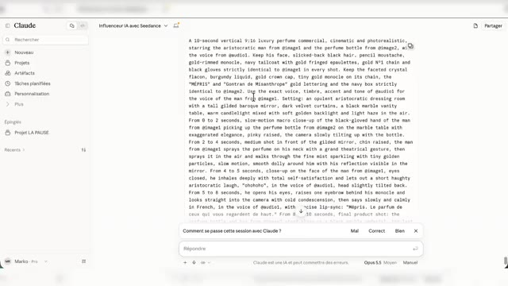
🔍 Agrandir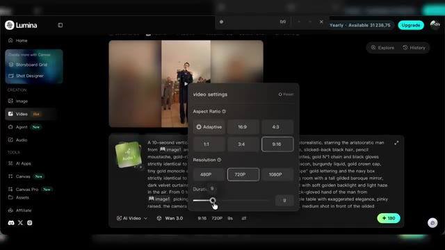
🔍 Agrandir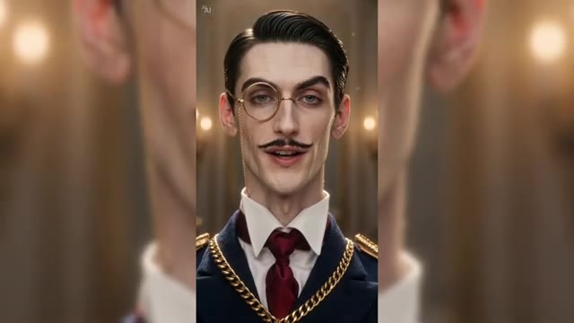
🔍 AgrandirVoilà, avec Seed Dance 2.5, tu as une vraie palette de formats pour faire vivre ton influenceur IA. Vidéo à partir d'images de référence, reproduction d'une vidéo existante, extension, pub produit. Et c'est important car pour créer une audience et rassembler autour de ton influenceur, son look ne suffira pas, aussi étrange soit-il.
Interface & Outils : Présentation vidéo animée avec graphismes de type Lumina.
Contenu textuel & Code : Titres de chapitres ou formats de l'outil Seed Dance 2.5 ('Vidéo à partir d'images de référence', 'Reproduction d'une vidéo existante').
Action / Démonstration : Le créateur présente les différents formats disponibles pour créer un influenceur IA.
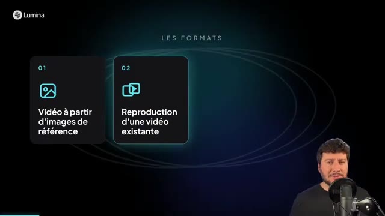
🔍 AgrandirUne fois que tu as cette audience, il te faut des modèles capables de faire autre chose que de l'imitation de trend. Des modèles qui te permettent de créer ton propre contenu, de donner une voix à ton influenceur et pourquoi pas lui faire faire des sponso. Et c'est d'ailleurs sans doute là que se trouve le vrai modèle économique derrière un influenceur IA.
Interface & Outils : Inexistant (visuel de type motion design/gros plan)
Contenu textuel & Code : Texte à l'écran : "C'est sans doute là que se trouve le vrai modèle économique" avec un logo euro.
Action / Démonstration : Le créateur parle et fait des gestes pour illustrer son propos sur le modèle économique des influenceurs virtuels.
Mais il faut être honnête, le plus dur ça sera de créer son audience. Car sans elle, tout le reste est compliqué. C'est pour ça que beaucoup de créateurs construisent pour leur personnage IA un lore autour d'un autre personnage IA déjà connu. pour pouvoir profiter un peu de leur notoriété. Et nous, c'est ce qu'on avait fait dans les exemples en introduction en faisant entrer Gontran dans des vidéos d'influenceurs IA déjà existantes.
Interface & Outils : Graphismes animés et présentation vidéo de type tutoriel.
Contenu textuel & Code : Texte "Construire un lore autour d'un personnage" et "En faisant entrer Gontran dans des vidéos" avec des icônes et des cartes d'influenceurs IA.
Action / Démonstration : Le créateur explique sa stratégie de création d'audience en s'appuyant sur des personnages connus.
Et si tu n'as pas envie de lancer ton propre influenceur IA, la maîtrise de ces modèles reste un outil très concret côté com. Créer du contenu UGC pour un client, promouvoir un service, un produit, un lieu, une destination et rien ne t'empêche non plus de créer un avatar à ton image ou celui de tes clients avec leur accord.
Interface & Outils : Interface graphique de présentation vidéo / outil IA (Lumina)
Contenu textuel & Code : Texte affiché : 'Un avatar à ton image ou celui de tes clients', avec deux boutons interactifs 'À ton image' (icône utilisateur) et 'Tes clients' (icône groupe).
Action / Démonstration : Le présentateur explique les différentes applications possibles des avatars IA (personnel ou pour des clients) avec un support visuel illustratif.
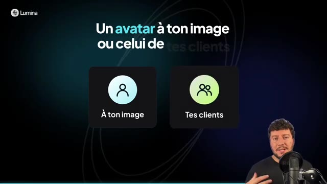
🔍 Agrandirde mettre cet avatar en scène dans les situations que tu veux. De mon côté c'est sur Lumina que j'utilise SeatDance 2.5 et c'est là qu'arriveront les prochains modèles SeatDance en avant première. Sur Lumina il y a aussi la présence d'autres modèles et d'autres outils, on aura peut-être l'occasion d'en parler sur la chaîne. En attendant je t'invite à faire un tour et tester par toi même, le lien est en description et commentaire épinglé. Merci et à bientôt sur le Labo des réseaux.
Interface & Outils : Interface graphique de la plateforme Lumina
Contenu textuel & Code : Textes 'SUR LUMINA, AUSSI', sections 'CREATION' et 'TOOLS', puis 'Merci'
Action / Démonstration : Le créateur conclut la vidéo en présentant la plateforme Lumina et en remerciant son audience.